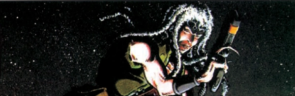

Feral Jackson was a mutant that transformed into a deadly beast form when in mortal peril. He was tried out as a replacement for Johnny Alpha when the former died, but the match-up of Feral and the Gronk (in the meandering Strontium Dogs) never had the same resonance as Johnny Alpha and Wulf (from Strontium Dog).
Art by Nigel Dobbyn
| Story Title | Parts | Pages | w indicates a wraparound coverCovers | Year(s) | Issues | Writer | Artist | Colourist | Letterer |
|---|---|---|---|---|---|---|---|---|---|
From Strontium DogThe Final Solution [part 1a] | 7 | 38 | 0 | 1988 | 600-606 | Alan Grant | Simon Harrison | [b&w] | Gordon Robson |
From Strontium DogThe Final Solution [part 1b] | 7 | 38 | 617: Simon Harrison 620: Simon Harrison 2 | 1989 | 615-621 | Alan Grant | Simon Harrison | [b&w] | Gordon Robson |
From Strontium DogThe Final Solution [part 1d] | 3 | 15 | 0 | 1989 | 645-647 | Alan Grant | Simon Harrison | [b&w] | Gordon Robson |
From Strontium DogsMonsters | 12 | 60 | 755: Steve Pugh 1 | 1991 | Reprints: M295 (supplement)750-761 | Garth Ennis | Steve Pugh | <-- | Elitta Fell |
From Strontium Dog Effectively mis‑titled, as it's a Feral tale.Dead Man's Hand | 1 | 6 | 0 | 1992 | Reprints: M320 (supplement)2KYB'93 | Garth Ennis | Simon Harrison | [b&w] | Gordon Robson |
From Strontium DogsReturn of the Gronk | 8 | 48 | 1 | 1993 | Reprints: M305 (supplement)817-824 | Garth Ennis | Nigel Dobbyn | <-- | Ellie de Ville |
From Strontium DogsThe Darkest Star | 12 | 61 | 860: Nigel Dobbyn 866: Nigel Dobbyn 2 | 1993 | Reprints: M306 (supplement)855-866 | Garth Ennis | Nigel Dobbyn | <-- | Glib: 1‑5, 9‑12 Ellie De Ville: 6‑8 various |
From Strontium DogsThe Cage | 1 | 6 | Nigel Dobbyn 1 | 1994 | Reprints: M320 (supplement)SDPP | Peter Hogan | Nigel Dobbyn | <-- | Annie Parkhouse |
From Strontium DogsCrossroads | 3 | 18 | 0 | 1994 | Reprints: M320 (supplement)897-899 | Peter Hogan | Nigel Dobbyn | <-- | Annie Parkhouse |
From Strontium DogsThe Alphabet Man | 3 | 18 | 937: Nigel Dobbyn 1 | 1995 | 937-939 | Peter Hogan | Nigel Dobbyn | <-- | Annie Parkhouse |
From Strontium DogsHigh Moon | 8 | 48 | 941: Mark Harrison 947: Mark Harrison 2 | 1995 | 940-947 | Peter Hogan | Mark Harrison | <-- | Bunty Mayhew |
From Strontium DogsThe Mutant Sleeps Tonight | 1 | 6 | 0 | 1995 | 957 | Peter Hogan | Simon Harrison | Junior Tomlin | Annie Parkhouse |
From Strontium Dog | The Life and Death of Johnny Alpha[Chapter One] | 11 | 67 | 1689: Ben Willsher 1694: Jon Davis‑Hunt 1698: Cliff Robinson & Dylan Teague3 | 2010 | 1689-1699 | John Wagner | Carlos Ezquerra Hector Ezquerravarious | <-- | Simon Bowland |
| >> Posters << | |||||||||
| Feral: Portrait of a Young Mutant | 1 | 1 | 0 | 1991 | 2KYB'91 | n/a | Steve Pugh | [b&w] | n/a |
| >> Features << | |||||||||
From Tharg's Datachips#10: Feral | 1 | 0.5 | 0 | 1996 | 993 | n/a | Steve Pugh | <-- | n/a |
| year | episodes | pages |
| 1986 | 0 | 0 |
| 1987 | 0 | 0 |
| 1988 | 7 | 38 |
| 1989 | 10 | 53 |
| 1990 | 0 | 0 |
| 1991 | 12 | 60 |
| 1992 | 1 | 6 |
| 1993 | 20 | 109 |
| 1994 | 4 | 24 |
| 1995 | 12 | 72 |
| 1996 | 0 | 0 |
| 1997 | 0 | 0 |
| 1998 | 0 | 0 |
| 1999 | 0 | 0 |
| 2000 | 0 | 0 |
| 2001 | 0 | 0 |
| 2002 | 0 | 0 |
| 2003 | 0 | 0 |
| 2004 | 0 | 0 |
| 2005 | 0 | 0 |
| 2006 | 0 | 0 |
| 2007 | 0 | 0 |
| 2008 | 0 | 0 |
| 2009 | 0 | 0 |
| 2010 | 11 | 67 |
| 2011 | 0 | 0 |
| 2012 | 0 | 0 |
Comic strip data (excludes other content):